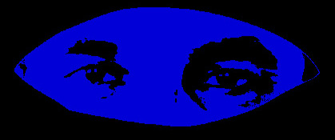

Surveillance as the Symptom of a Criminal State
Anand Teltumbde

Former CEO of Petronet India Ltd, a professor at IIT Kharagpur and Goa Institute of Management, a civil rights activist, and the author of over 30 books.
Across the world state surveillance has ceased to be an exceptional response to extraordinary threats and has instead become a routinized feature of governance. Democracies that proclaim popular sovereignty now systematically monitor the very citizens in whose name they rule. The justifications vary—national security, public order, counterterrorism, cybersafety, but the underlying logic is strikingly uniform. Surveillance today is not merely a technique of security; it is a structural symptom of a state that increasingly governs through suspicion, anticipates dissent as crime, and treats its population less as citizens than as potential offenders.
This global normalisation of surveillance marks a profound transformation in the relationship between the state and the people. In republican theory, sovereignty flows upward from the people; the state is meant to be accountable, visible, and limited. Surveillance reverses this relationship. It renders the state opaque while making citizens legible, traceable, and pre-emptively suspect. When this inversion becomes permanent, it signals not strength but crisis; a state that no longer trusts consent must rely on monitoring.
The Security Alibi
Every surveillance regime is accompanied by an alibi. In the United States and Europe, it is “terrorism” and “national security.” In India, the preferred formulation is the “threat to the unity and integrity of the nation.” The phrasing differs, but the logic is identical: an amorphous, ever-present danger is invoked to justify extraordinary powers, which then quietly become ordinary.
What is crucial is that these threats are rarely defined with precision. Their vagueness is not accidental. An undefined enemy allows surveillance to expand indefinitely—across populations, platforms, and time. The result is a permanent state of exception without formal declaration, where emergency powers are exercised as routine administrative measures.
Surveilance thus becomes less about responding to specific dangers and more about managing society through anticipatory control.
Criminalisation of Politics
The expansion of surveillance coincides with another global trend: the criminalisation of political dissent. Protest, journalism, academic critique, and even routine political organising are increasingly framed as security risks. Surveillance supplies the evidentiary infrastructure for this shift. Once communication is monitored and data archived, the state no longer needs to prove guilt in the traditional sense; it only needs to demonstrate patterns, associations, or intentions.
In India, this logic is especially visible. Laws ostensibly aimed at terrorism or unlawful activity are routinely deployed against students, activists, journalists, and political opponents. Surveillance enables this deployment by converting political life into a searchable database of potential incrimination. The criminal state does not primarily punish acts; it polices tendencies.
This is where surveillance reveals its deeper function. It is not simply a neutral tool that can be misused. It actively reshapes the terrain of legality by lowering the threshold at which dissent becomes suspect. In such a system, innocence is no longer presumed; it must be continuously performed.
India’s Surveillance Architecture
India’s surveillance regime did not emerge overnight. It is the outcome of a long institutional continuity, intensified by technological capacity and ideological confidence. Colonial instruments of monitoring—sedition laws, preventive detention, intelligence gathering—were never dismantled after independence. They were constitutionalised, normalised, and later digitised.
What distinguishes the present moment is scale and integration. Surveillance today is no longer confined to intelligence agencies operating in the shadows. It is embedded in everyday governance: biometric identification, financial monitoring, digital communications interception, and data-sharing across agencies. Each system is defended as necessary, efficient, or modern. Taken together, they form an architecture of total visibility.
The Indian state insists that such surveillance targets only the “anti-national,” the “terrorist,” or the “criminal.”
But this distinction collapses quickly in practice. When the definition of threat is ideological rather than evidentiary, surveillance inevitably spills over into the general population. The citizen is no longer the bearer of rights but the holder of data.
Sovereignty without Consent
Surveillance also produces a cultural shift. It normalises suspicion as a civic virtue. Citizens are encouraged to accept monitoring as the price of safety, to internalise the state’s anxieties as their own. Those who resist surveillance are portrayed as having something to hide, or worse, something to sabotage.
This moral economy is particularly potent in societies marked by majoritarian nationalism. In India, surveillance disproportionately affects minorities, Dalits, Adivasis, and political dissidents—groups already positioned as suspect within the national imagination. Surveillance thus does not operate on a neutral social field; it amplifies existing hierarchies of trust and distrust.
The criminal state thrives on this differential visibility. Some populations are hyper-visible, constantly tracked and scrutinised; others remain effectively invisible, shielded by proximity to power. Surveillance, in this sense, is not merely about control but about selective exposure.
From Surveillance to Self-Censorship
One of the most insidious effects of surveillance is that it does not require constant enforcement to be effective. The knowledge—or even the suspicion—that one is being watched is enough to induce self-censorship. Speech becomes cautious, association selective, dissent strategic.
This is why surveillance is so attractive to modern states. It disciplines without spectacle. Unlike overt repression, it does not immediately provoke outrage. Its success lies precisely in its invisibility and its gradual incorporation into everyday life.
In India, this has profound implications for intellectual and political culture. Universities, media organisations, and civil society groups increasingly operate under an ambient pressure to conform. The criminal state does not need to arrest everyone; it only needs to make examples often enough to sustain fear.
Surveillance as Symptom
It is important to stress that surveillance is not the root problem. It is a symptom—of a state that has lost the capacity or willingness to govern through consent, redistribution, and justice. Surveillance fills the vacuum left by the retreat of welfare, the erosion of labour protections, and the concentration of economic power.
In this sense, surveillance accompanies neoliberal transformation. As the state withdraws from social responsibility, it expands its coercive and monitoring functions. The same state that claims incapacity when asked to provide employment, healthcare, or education displays remarkable efficiency in tracking phones, intercepting emails, and compiling databases.
This asymmetry is not accidental. It reveals the priorities of the criminal state: protection of order, not provision of justice.
Conclusion
To oppose surveillance merely on grounds of privacy is to underestimate its significance. Surveillance is not simply about data; it is about power. It redefines citizenship, reorganises politics, and reorients the state toward suspicion rather than trust.
In India, as elsewhere, the question is not whether surveillance is legal, technological, or efficient. The real question is what kind of state requires such pervasive monitoring of its own people. When surveillance becomes normal, it signals not security but fear—fear of dissent, fear of accountability, fear of the people themselves.
Seen in this light, surveillance is not a deviation from democracy but a warning about its degradation. It is the visible symptom of a criminal state—one that governs not by consent but by anticipation, not by justice but by control.